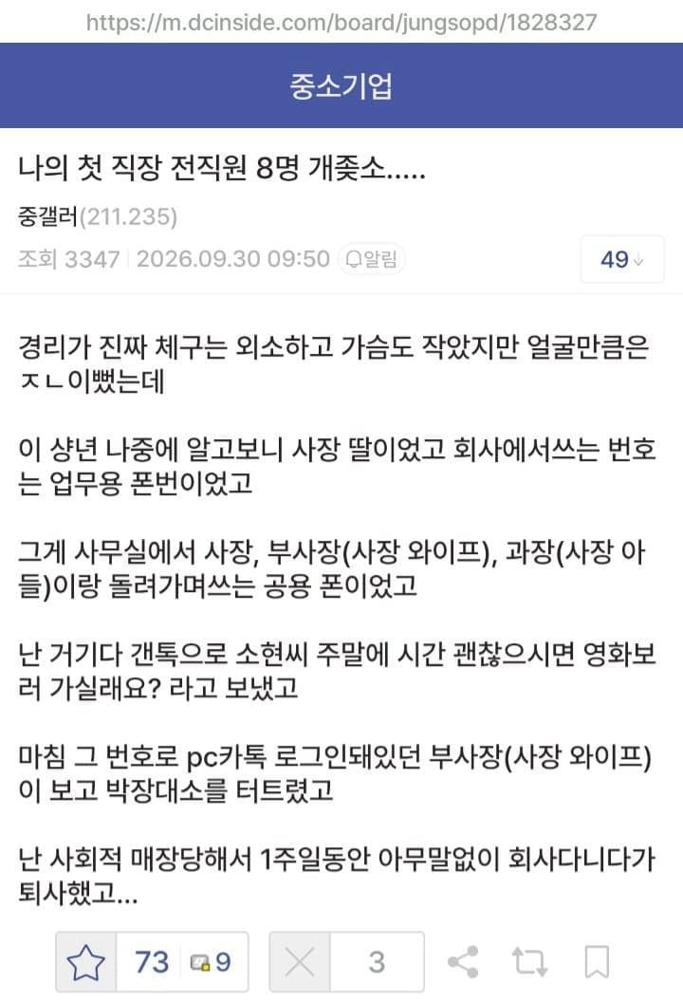

ㅋㅋㅋㅋㅋ

ㅋㅋㅋㅋㅋ
솔거 노비가 들어오네
약속 일정 잡고, 공용폰 들고 사모님이 안 나온게 어디임 ㅋㅋㅋ
어흐
자네 이것먹고 떨어지게 (스팸3개담긴 봉지를 건네며)
신세계 상품권 1,000원짜리 지류 3장을 꺼내며
ㅗㅜㅑ
퇴사할거까진아닌거같은데
고백박은->고백받은 이었다면 개꿀라이프였네
사장딸이 고백 박은거 고민판에 있었음
심연이던데
그건 개못생긴 돼지 사장딸썰 아녔음?
뭔가 애매하게 좆 같은 게 진짜 같네
느 집엔 이거 없지? 봄감자가 맛있단다
이러시면 안됩니다 사모님. 사장님이 보시면...
외 안댄돼?
완전가족경영이네 끔찍하다
좃소가 다 그렇지 뭐
이모 삼촌 조카 사위 등등
아 고백"박"은이었구나
민망하지만 각 보였으면 헤프닝으로 넘길것 같은데
한번씩 떠오를떄마다 수치+1
잘생긴 인싸놈이었으면 이미 사장,사모님부터 휘어잡고 딸내미 휘어잡아서 가족회사의 일원이 됐을 것..
8명중 4명이 사장가족에 1명이 개붕이...
ㅋㅋㅋㅋㅋㅋㅋㅋㅋㅋ